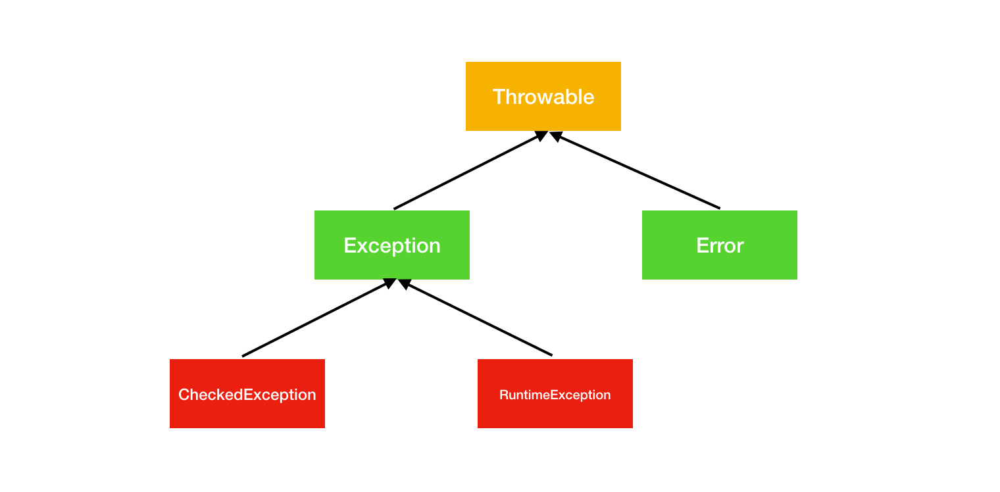

Java如何处理异常
程序总会出错，出错了就需要处理。Java 中提供了很完备的异常处理机制，可以根据自己需要进行定制。
Java 按照问题的严重程度进行分类，分成 Error和 Exception。Exception 又可以分成 CheckedException 和 RuntimeException。
Error 和 Exception 都继承了 Throwable。

Error 和 Exception 的区别
一般来说， Error 是无法恢复的错误，通常会导致程序终止， Error 通常是虚拟机层面的错误。Exception 只要妥善处理，程序就可以继续正常运行。
一旦出现 Error，程序也就没有恢复的必要了，比如 OutOfMemoryError，说明是机器上的内存不够用了，这个时候任何处理都来不不及，只能停止服务。
对于 Exception 就需要看情况。上面说到 Exception 可以分为 CheckedException 和 RuntimeException。
在 Java 中，抛出一个异常很简单，通过 throw 关键字就可以，同时也需要方法后面通过关键字 throws 来表明这个方法会抛出那些异常。
public void throwException() throws Exception {
throw new Exception();
}
在调用这个方法时，就要对这个方法有可能抛出的异常进行处理，有两种处理方法，即可以将异常 通过 try-catch 进行处理，也可以通过 throws 将异常抛向更上层。
//方法1：使用 try-catch 来处理异常
public void callFunction() {
try {
throwException();
} catch (Exception e) {
e.printStackTrace();
}
}
//方法2：使用 throws 将异常抛向上层
public void callFunction() throws Exception {
throwException();
}
上面提到的异常就是CheckedException，需要通过 try-catch 或者 throws 进行处理，否则就无法通过编译。
下面的代码用于获取一个文件的输入流，在文件不存在的情况下，会抛出 FileNotFoundException。
FileInputStream fis = null;
try {
fis = new FileInputStream("data.txt");
} catch (FileNotFoundException e) {
e.printStackTrace();
}
这也是 CheckedException 的通用处理方式。
int i = 0;
int result = 10 / i;
很明显，上面的代码肯定会出现异常。
Exception in thread "main" java.lang.ArithmeticException: / by zero
这类异常就是通常所说的 RuntimeException，这类的异常由 JVM 抛出，不需要通过 try-catch 等机制来处理。如果出现这类异常，说明程序的逻辑有问题，可以通过修改代码来防止这类异常发生。
int i = 0;
if (i != 0) {
int result = 10 / i;
}
类似的 RuntimeException 还有 NullPointerException 以及 ArrayIndexOutOfBoundsException。
异常处理
通常，Error 和 RuntimeException 不需要进行处理。
需要进行处理的是 CheckedException，最常用的方式就是使用 try-catch。
下面的代码表示读取一个文件的内容，如果在读取的过程中发生异常，就会跳转到 catch 模块进行异常处理，而不执行 return 语句。
FileInputStream fis = null;
try {
StringBuilder data = new StringBuilder();
fis = new FileInputStream("data.txt");
byte[] buffer = new byte[1024];
int length = 0;
while ((length = fis.read(buffer)) != -1) {
data.append(new String(buffer, 0, length));
}
return data.toString(); // 如果发生异常，那么这里的 return 语句不会执行
} catch (IOException e) {
e.printStackTrace();
}
return null;
这是如何实现的呢？这个方法完整的字节码如下：
public java.lang.String readData();
Code:
0: aconst_null
1: astore_1
2: new #5 // class java/lang/StringBuilder
5: dup
6: invokespecial #6 // Method java/lang/StringBuilder."<init>":()V
9: astore_2
10: new #7 // class java/io/FileInputStream
13: dup
14: ldc #8 // String data.txt
16: invokespecial #9 // Method java/io/FileInputStream."<init>":(Ljava/lang/String;)V
19: astore_1
20: sipush 1024
23: newarray byte
25: astore_3
26: iconst_0
27: istore 4
29: aload_1
30: aload_3
31: invokevirtual #10 // Method java/io/FileInputStream.read:([B)I
34: dup
35: istore 4
37: iconst_m1
38: if_icmpeq 60
41: aload_2
42: new #11 // class java/lang/String
45: dup
46: aload_3
47: iconst_0
48: iload 4
50: invokespecial #12 // Method java/lang/String."<init>":([BII)V
53: invokevirtual #13 // Method java/lang/StringBuilder.append:(Ljava/lang/String;)Ljava/lang/StringBuilder;
56: pop
57: goto 29
60: aload_2
61: invokevirtual #14 // Method java/lang/StringBuilder.toString:()Ljava/lang/String;
64: areturn
65: astore_2
66: aload_2
67: invokevirtual #16 // Method java/io/IOException.printStackTrace:()V
70: aconst_null
71: areturn
Exception table:
from to target type
2 64 65 Class java/io/IOException
看底部的 Exception table，这个也称之为异常表，其他的字节码可以先不用管。这个异常表就是 Java 处理异常的关键，其中 from 和 to 表示的 try-catch 包裹的代码范围，target 则表示异常处理的开始。
如果在 form 到 to 之间发生了异常，接会直接跳转到 target 的位置开始执行。
对于文件流，使用过后需要对其进行关闭，否则可能会出现内存泄漏等问题，所以上面的代码还不完善。try-catch-finally 则可以解决这个问题，finallly 中的代码无论是否出现异常都会执行，确保文件流会关闭。
FileInputStream fis = null;
try {
StringBuilder data = new StringBuilder();
fis = new FileInputStream("data.txt");
byte[] buffer = new byte[1024];
int length = 0;
while ((length = fis.read(buffer)) != -1) {
data.append(new String(buffer, 0, length));
}
return data.toString();
} catch (IOException e) {
e.printStackTrace();
} finally {
try {
if (fis != null) {
fis.close();
}
} catch (Exception e) {
e.printStackTrace();
}
}
如何确保 finally 中的代码一定会执行呢？为了看的更清楚，我将 finally 中的异常改成了 Exception，并且删除了一些无关的字节码：
public java.lang.String readData();
Code:
// ...
71: invokevirtual #15 // Method java/io/FileInputStream.close:()V
74: goto 84
77: astore 6
79: aload 6
81: invokevirtual #17 // Method java/lang/Exception.printStackTrace:()V
//....
97: invokevirtual #15 // Method java/io/FileInputStream.close:()V
100: goto 134
103: astore_2
104: aload_2
105: invokevirtual #17 // Method java/lang/Exception.printStackTrace:()V
//....
118: invokevirtual #15 // Method java/io/FileInputStream.close:()V
121: goto 131
124: astore 8
126: aload 8
128: invokevirtual #17 // Method java/lang/Exception.printStackTrace:()V
131: aload 7
133: athrow
134: aconst_null
135: areturn
Exception table:
from to target type
66 74 77 Class java/lang/Exception
2 66 87 Class java/io/IOException
92 100 103 Class java/lang/Exception
2 66 111 any
87 92 111 any
113 121 124 Class java/lang/Exception
111 113 111 any
加了 finally 之后，发现异常表中增加了很多内容（any 先忽略），在 finally 中抛出的 Exception 出现了 3 次，再看上面的字节码，发现调用文件流的 close 方法也出现 3 次。
所以 finally的实现就不难理解，编译器会将 finally 中的代码拷贝到所有可能的路径上，包括正常执行的流程以及 catch 中的流程。
finally 中也有可能会抛出异常，如果 finally 中抛出异常会怎么样呢？
在 Java7 以前，finally 中的异常会覆盖前面所抛出的异常，这种情况当然不是我们所想看到的。在 Java7 以后，引入了 Suppressed 异常来解决这个问题，这个特性允许将一个异常附在另一个异常上面，因此抛出的异常中可以附带多个异常信息。
try-catch 除了可以用来处理异常之外，也可以专门用来处理资源关闭之类的问题。在一些情况下，catch 块也可以省略，直接使用 try-finally:
FileInputStream fis = null;
try {
StringBuilder data = new StringBuilder();
fis = new FileInputStream("data.txt");
} finally {
if (fis != null) {
fis.close();
}
}
代码上面的每次都需要手动的去写 finally 中的代码，这样的样本代码其实毫无意义，无端增加了代码的复杂度。在 Java 7 以后，增加了 try-with-resources 语法糖，上面的代码可以这么写：
try(FileInputStream fis = new FileInputStream("data.txt");) {
StringBuilder data = new StringBuilder();
byte[] buffer = new byte[1024];
int length = 0;
while ((length = fis.read(buffer)) != -1) {
data.append(new String(buffer, 0, length));
}
return data.toString();
}
这样就可以少写很多的样本代码，需要注意的是，使用 try-with-resource 必须确保这个类实现了 AutoCloseable 接口。
Java 7 中还提供了一些其他的语法糖，比如使用 catch 来处理多种异常：
try {
// ...
} catch (Exception1 | Exception2 e) {
// ...
}
断言
Java 中还有一个特性叫断言，也可以用来进项异常情况的处理，使用很简单，如下：
int i = 1;
assert i > 0;
Java 默认是不打开断言的，也就是说即使你在代码中写上断言代码也是不起作用的，
如果要启用断言，要加上虚拟机参数 -ea 来启用断言。
使用断言有一个问题，如果断言的结果与预期不符合，那么整个程序就会终止运行。
断言适合在开发和测试阶段使用，用于快速发现以及定位问题，上线之后，可以将断言 禁用，这样就不用反复修改代码了。
日志
日志是 Java 中不可缺少的部分。在大型系统中，日志是最重要的排查工具。JDK 中自带了 java.util.logging.Logger，使用起来很方便：
public class LoggerTest {
private static final Logger logger = Logger.getLogger(String.valueOf(LoggerTest.class));
public static void main(String[] args) {
logger.info("Logger");
}
}
但这个框架在扩展性和性能上都不是很理想，所以出现了很多第三方的日志框架，比如 Log4j，Logback 等。